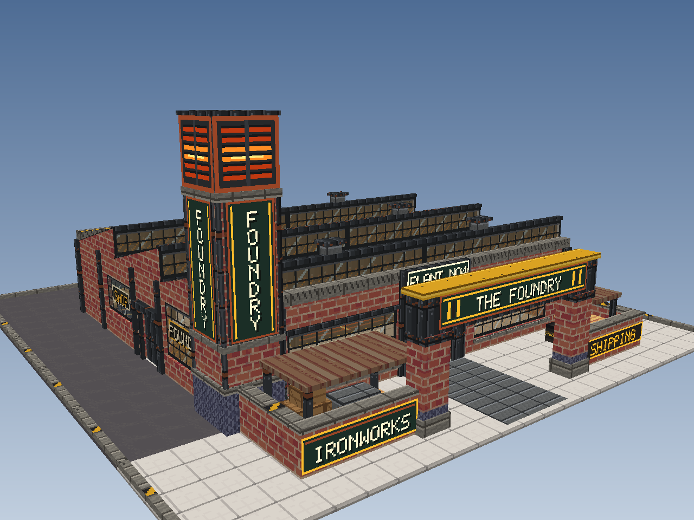
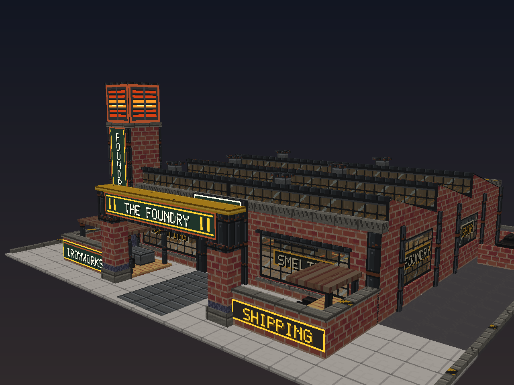
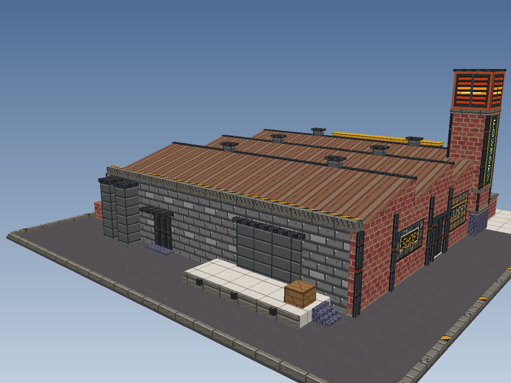
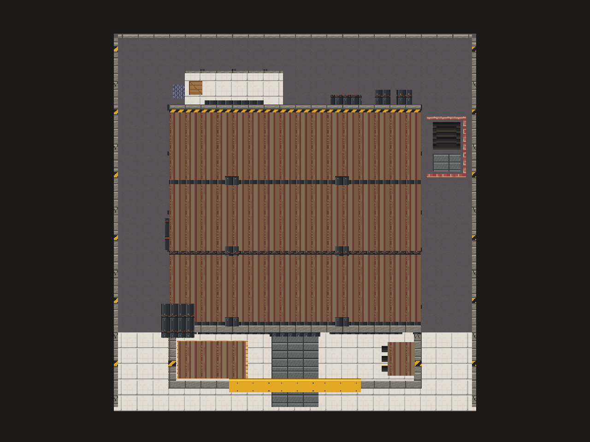
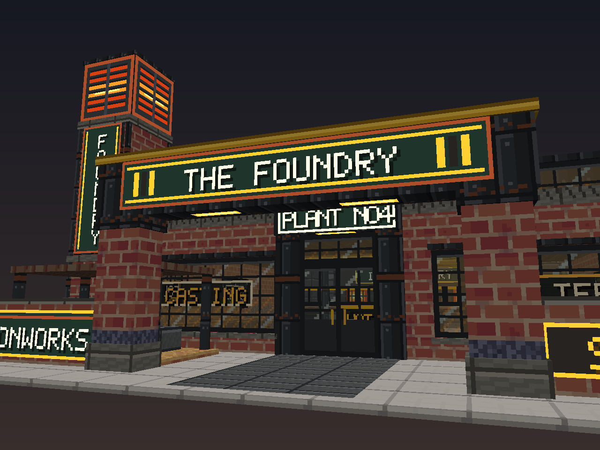
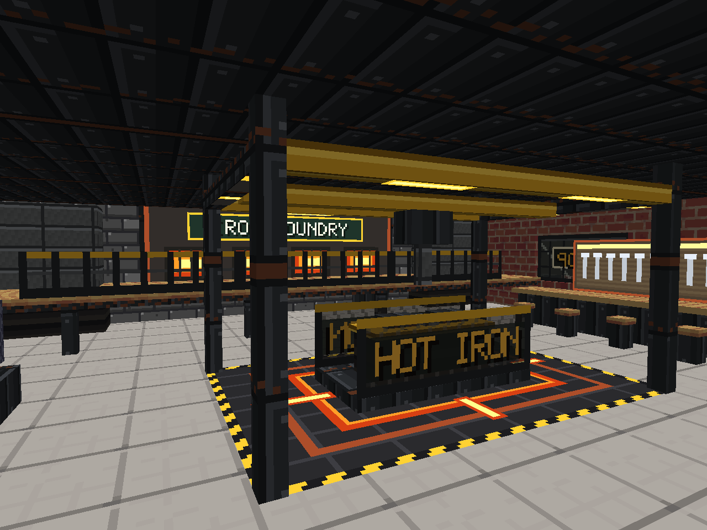
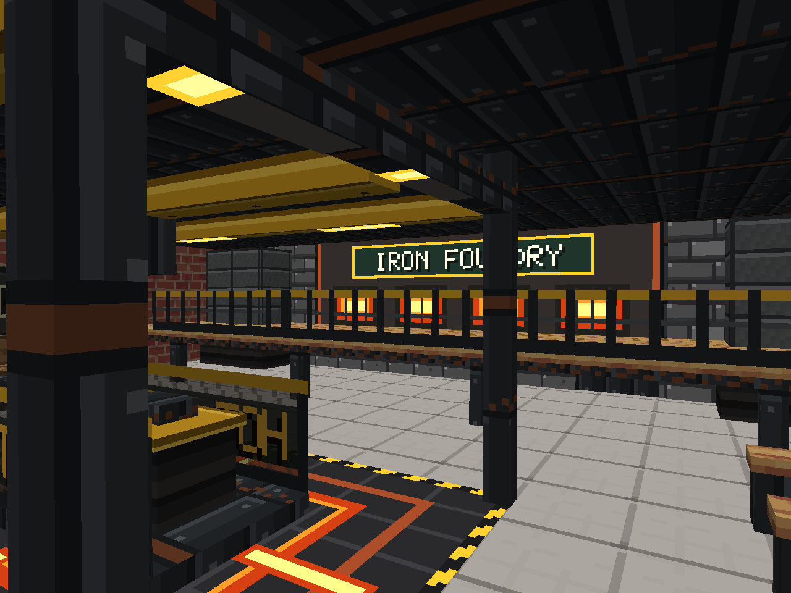

THE FOUNDRY IRONWORKS (1938) — Pre-Conversion Working Factory (foundry-factory.glb)
28.56m × 29.80m lot · 19.87m × 18.00m building · 11.48m max height · 2,590 visible triangles · 12 materials · 0.0388m/texel (2×2 art pixel grid)
01. Daylight Front — Brick Smokestack & Corrugated Sawtooth Roof

02. Night Shift — Gatehouse Gantry, Shipping Yard & Furnace Glow

03. Rear Freight Loading Dock, Exhaust Stacks & Coal Bunker

04. Orthographic Corrugated Roof, Ventilators & Working Yard Plan

05. Street Person-Height Gatehouse Arrival (1.75 m)

06. Working Foundry Floor — Molten Crucible Pit, Bridge Crane & Tool Crib

07. Molten Crucible Casting Pit, Overhead Hoist & Rear Blast Furnace
